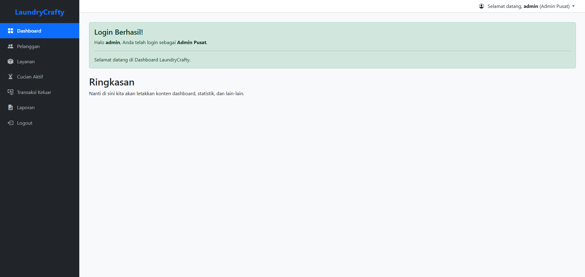

Tugas 10: Laporan Project (Aplikasi LaundryCrafty)
Nama: Ageng Prayogo
NRP: 5025241225
Kelas: A
Proyek ini bertujuan untuk membuat aplikasi manajemen laundry "LaundryCrafty" berbasis web menggunakan PHP dan MySQL dengan fungsionalitas CRUD yang lengkap.
Deskripsi & Konsep Implementasi
Aplikasi ini adalah sistem manajemen laundry (CRUD) yang dibangun dari dasar. Fokus utamanya adalah membuat fondasi yang kuat untuk mengelola data pelanggan, layanan, dan transaksi, dengan tampilan dashboard yang modern.
Sistem ini dibangun dengan memisahkan logika dari tampilan dan menerapkan beberapa konsep penting:
- Pemisahan Logika: Logika pemrosesan (tambah, edit, hapus) dipisah ke dalam file-file `proses-*.php` agar kode lebih rapi.
- Template Layout (Sidebar): Menggunakan `layout_header.php` dan `layout_footer.php` untuk membuat template dashboard dengan sidebar yang konsisten di semua halaman.
- Notifikasi Interaktif: Menggunakan Pustaka `SweetAlert2` untuk memberikan umpan balik (sukses/error) yang elegan setelah operasi CRUD.
- Password Hashing: Mengadopsi sistem login yang aman menggunakan `password_hash()` dan `password_verify()` (dari file login Anda sebelumnya).
- Prepared Statements: Mencegah SQL Injection dengan menggunakan `prepare()`, `bind_param()`, dan `execute()` pada semua query database (CRUD Pelanggan).
- Otentikasi Google: Mendukung login alternatif yang aman menggunakan akun Google (dari file login Anda sebelumnya).
Alur Kerja CRUD Pelanggan:
- Admin login dan masuk ke halaman "Pelanggan" (`pelanggan.php`).
- Halaman ini memanggil `layout_header.php` (untuk sidebar) dan mengambil data dari tabel `pelanggan`.
- Tombol "Hapus" menggunakan JavaScript `onclick` untuk memicu konfirmasi `SweetAlert2` sebelum mengarahkan ke `hapus-pelanggan.php`.
- Tombol "Tambah" mengarah ke `form-tambah-pelanggan.php`.
- Form ini akan mengirim data via `POST` ke `proses-tambah-pelanggan.php`.
- File proses menjalankan *prepared statement* untuk `INSERT` data, lalu mengarahkan kembali ke `pelanggan.php` dengan parameter `?status=sukses_tambah`.
- JavaScript di `pelanggan.php` mendeteksi parameter `status` ini dan menampilkan notifikasi `SweetAlert2` "Sukses!".

Tampilan dashboard utama aplikasi LaundryCrafty dengan layout sidebar.
Hasil Tugas
Demo di bawah ini adalah aplikasi LaundryCrafty yang telah kita bangun, yang mencakup sistem login dan fungsionalitas CRUD Pelanggan secara penuh.
Lihat Demo Live
Lihat Kode Sumber